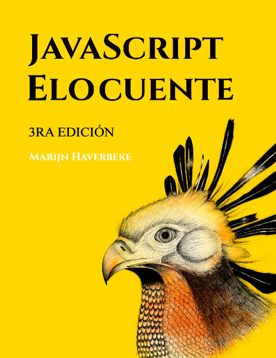

JavaScript Elocuente3ra edición
Este es un libro acerca de JavaScript, la programación y las maravillas del mundo digital. Puedes leerlo aqui online, o conseguir tu versión en físico de la segunda edición. Por ahora se está trabajando en una versión en físico de la tercera edición, pero aun no está claro cuándo estará disponible.

Escrito por Marijn Haverbeke.
Licensiado bajo una licencia Creative Commons attribution-noncommercial. Todo el codigo en este libro tambien podria ser considerado bajo la licencia MIT.
Ilustraciones hechas por varias artistas: Portada e ilustraciones de capítulos hechas por Madalina Tantareanu. Pixel art en los Capítulos 7 y 16 por Antonio Perdomo Pastor. Diagramas de expresión regular en el Capítulo 9 generado con regexper.com por Jeff Avallone. Fotografía de Villa en el Capítulo 11 por Fabrice Creuzot. Concepto del juego en el Capítulo 15 por Thomas Palef.
La tercera edición fue hecha posible
gracias a 325 respaldos financieros, siendo los mas
notables hechos por  y
y  .
La segunda edición fue finaciada por 454 respaldos, con
contribuciones notables
de
.
La segunda edición fue finaciada por 454 respaldos, con
contribuciones notables
de  ,
,  ,
y
,
y  .
.
Contenidos
- Introducción
-
(Parte 1: Lenguaje)
Valores, Tipos, y Operadores - Estructura de Programa
- Funciones
- Estructuras de Datos: Objetos y Arrays
- Funciones de Orden Superior
- La Vida Secreta de los Objetos
- Proyecto: Un Robot
- Bugs y Errores
- Expresiones Regulares
- Modulos
- Programación Asincrónica
- Proyecto: Un Lenguaje de Programación
-
(Parte 2: El Navegador)
JavaScript y el Navegador - El DOM (Document Object Model)
- Manejandro Eventos
- Proyecto: Un Juego de Plataforma
- Dibujando en Canvas
- HTTP y Formularios
- Proyecto: Un Editor de Pixel Art
-
(Parte 3: Node)
Node.js - Proyecto: Sitio Web de Skill-Sharing
Una versión en papel de Eloquent JavaScript, incluyendo un capítulo adicional, esta siendo trabajada por No Starch Press. La tercera edición deberia de estar disponible en papel en algún momento de 2018.
Otras Páginas
- Arenero de código y soluciones a los ejercicios
- Fe de Errata para el libro en físico
- Este libro como un solo archivo PDF (& una versión pequeña para móbiles)
- Este libro como un archivo EPUB
- Este libro como un archivo MOBI (Kindle)
- Chat comunitario para los lectores
- La primera edición del libro
- La segunda edición del libro